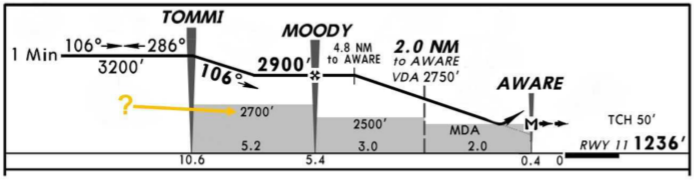
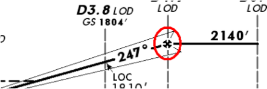
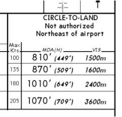
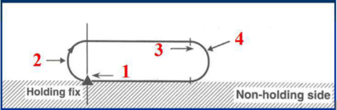
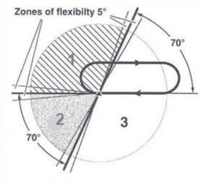
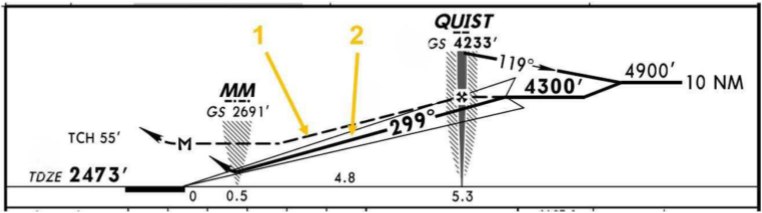

Воздушная навигация ВС Airbus 319/320/321: вопросы и ответы
Воздушная навигация для Airbus A319/A320/A321: высота аэродрома, altitude, course, track и heading.
Сначала попробуйте ответить самостоятельно, затем раскройте вопрос и сравните ответ с ключом базы. Здесь нет счёта, результаты чтения не меняют прогресс тренировок.
Проверить себя в тренировке →Ответы приведены по тестовой базе MY FREIGHTER с задокументированными исправлениями. Это материал для повторения, а не самостоятельное руководство по эксплуатации. Правовые вопросы включают нормы Узбекистана. Об источнике. Ссылки на полный PDF требуют интернета.
Вопросы раздела
1Airport Elevation:
Ответ по ключу базы
- C. The highest point of airport usable runways measured from MSL
2Altitude (ICAO) is measured from MSL
3CRP is:
Ответ по ключу базы
- A. Compulsory reporting point – points which must be reported to ATC
4Course is:
Ответ по ключу базы
- A. The angle between North and the intended direction of flight in the horizontal plan which is measured in the whole degrees
5Track is:
Ответ по ключу базы
- B. The angle between North and actual direction of flight in the horizontal plan which is measured in the whole degree
6Heading is:
Ответ по ключу базы
- C. The angle between North and the longitudinal axis of the aircraft which is measured in the whole degrees
7What is a difference between “Course” and “Track”?
Ответ по ключу базы
- B. Course is intended flight path of an aircraft over the ground, but Track is actual flight path
8The purpose of Missed Approach Point in an Instrument Approach procedure is:
Ответ по ключу базы
- A. To ensure obstacle clearance in case of missed approach
9What is the main attribute of “Non-Precision approach”?
Ответ по ключу базы
- B. No any electronic glideslope is provided (no vertical guidance)
10Choose the definition which corresponds to “Visual Approach”:
Ответ по ключу базы
- B. Uncompleted IFR approach with the visual reference to terrain on the final phase of approach and landing
11What does controller mean by saying: “You are cleared for unrestricted climb”?
Ответ по ключу базы
- C. You may climb assigned altitude (FL) and disregard any altitude constraints according to SID procedure
12Choose the correct figure illustrating the Final Approach (ICAO):
13The crew is allowed to maintain MDA or MDH up to MAPt point until the required visual reference has reached:
14Give the definition for MDA/MDH (Minimum Descent Altitude / Minimum Descent Height):
Ответ по ключу базы
- B. A specified altitude or height in a non-precision approach or circling approach below which descent must not be made without the required visual reference
15Give the definition for DA/DH (Decision Altitude/ Decision height):
Ответ по ключу базы
- A. A specified altitude or height in the precision approach or approach with vertical at which a missed approach must be initiated if the required visual reference to continue the approach has not been established
16The crew is allowed to maintain DA or DH up to MAPt until the required visual reference has reached:
17Minimum Fuel is a situation:
Ответ по ключу базы
- A. In which an aircraft’s fuel supply has reached a state where little or no delay can be accepted
18The altitude represented by a shaded (gray) rectangle bordered by two defining fixes is:

Ответ по ключу базы- B. Segment Minimum Altitudes (SMA). The minimum altitude that provides minimum obstacle clearance in each segment of a NPA
19Give the definition for balked landing?
Ответ по ключу базы
- A. A landing maneuver that is unexpectedly discontinued below DA(H)/MDA(H) or beyond MAPt
20The energy circle is a green arc, centered on the aircraft's position and oriented towards the current track line. When is it displayed on ND’s
Ответ по ключу базы
- B. When Autoflight HDG or TRK mode is selected during descent
21While performing a circling approach a crew should level off at MDA/H. To avoid the overshooting, flight crew must push V/S/FPA knob with anticipation. Let’s pretend you are descending with V/S of 700 ft/min. When will you push V/S/FPA knob to level off?
22What Autoflight modes are you expected to see on FMA while performing an NPA using LNAV/VNAV minimum?
23Which of these Russian abbreviations corresponds to term “QDM”?
24Which of these Russian abbreviations corresponds to term “QDR”?
25Which of these Russian abbreviations corresponds to term “Course”?
26Which of these Russian abbreviations corresponds to term “Track”?
27Which of these Russian abbreviations corresponds to term “Drift”?
28Which of these Russian abbreviations corresponds to term “X-TRACK”?
29The symbol inside the red circle is:

Ответ по ключу базы- A. Maltese Cross is the designator of FAF (non-precision approach) in the profile view of Jeppesen Terminal charts
30The signals from which sources do the IRS use?
Ответ по ключу базы
- C. Its own measurements of aircraft accelerations and angular rates
31On the figure, what is the meaning of MDA and VIS data?

Ответ по ключу базы- A. MDA and VIS depends on MAX speed during circling approach and means the minimum altitude for circling approach initiation and visual maneuvering area accordingly
32Cost index 0 corresponds to:
33Cost index 999 corresponds to:
34When flying at cruise altitude, the aircraft navigates using radio navaids only.
35The Flight Path vector (FPV) represents the lateral and vertical trajectory of the aircraft with respect to the ground. On the lateral scale, it indicates the aircraft's track. On the vertical scale, it indicates the aircraft's flight path angle.
36At what height does the RA indication appear on PFDs?
37During operation in the RVSM airspace what overshoot or undershoot is allowed during level change?
38What kind of turbulence should be reported to ATC during cruise for RVSM operation?
39Departure procedures based on standard climb gradient:
40Departure procedures assume that one engine is inoperative.
41Additional buffer area of the holding pattern extended beyond the boundary is:
42Look at the picture. Name holding pattern parts:

Ответ по ключу базы- C. 1- inbound, 2- fix end, 3- outbound, 4- outbound end
43In holding pattern pilots should correct timing & lateral navigation for known winds.
44Holding pattern timing at or below 14000ft is:
45Holding pattern timing above 14 000 ft is:
46Standard missed approach procedures is based on a climb gradient
47Look at the picture. There are 3 entry sectors into the holding pattern. Name them:

Ответ по ключу базы- B. 1- parallel entry, 2- offset entry, 3- direct entry
48Who is responsible for development of procedures, required in case of engine failure which occurs after V1?
49Please identify the type of NPA approach depictured in the chart:
50Fly-by waypoint:
Ответ по ключу базы
- A. Requires the use of turn anticipation to avoid overshoot of the next flight segment
51Fly-over waypoint:
Ответ по ключу базы
- A. Precludes any turn until the waypoint is overflown and is followed by an intercept maneuver of the next flight segment
52What information will be available if ADIRS IR rotary selectors are set to ATT position?
53What is the difference between profile depicted by dash line (1) and hard line (2)?

Ответ по ключу базы- A. Dash line represents profile for NPA while hard line represents profile for PA